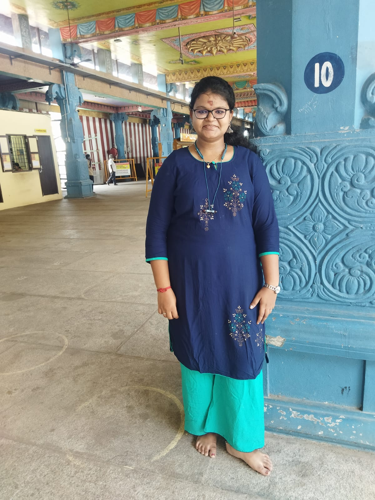

About Me

Hi! I am Linga Maunika A ,I Am Pursing My B.E Computer Science And Engineerning At SA Engineerning
Welcome to my portfolio! I'm passionate about web development and design, and I strive to create engaging
and user-friendly digital experiences. With a strong foundation in HTML, CSS, and JavaScript,I enjoy bringing
ideas to life through code. I'm always eager to learn and explore new technologies to enhance my skills further.
I Learned My client side Fullstack in My college Vac And I Learned Scientific Calculator By Using Kotlin.
I Develop My Skill in various Platform like Hackerack,Skillrack,Mathlab.I have finish many certificates in hackerack
in java,python and Sql.I have finish many certificate in skillrack.Thank You To Read About Me...
Skills
Projects
Project 1

This Project is About The Project Based On the Python Programming
Project 2

This Project is About The Based On the Web DEvelopment
Project 3

This Project is About The Based On A App DEvelopment By Using Kotlin
Resume
Contact
Email: maunika@gmail.com
Phone: +919876543210